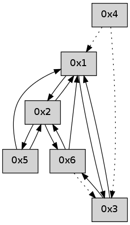

>> << IDX [start] -100 -25 -5 +0 +5 +25 +100 [495.210453987]
 Previous packets
----------------------------------------------------------------------
490.289376 beacon01(adaf) #0 coord=01,02,05,03,04,06 cycle=432.0ms assoc
-- color-indic=0 64 35 69
490.299337 beacon02(adaf) #0 coord=01,02,05,03,04,06 cycle=432.0ms assoc 64 64 96
490.309338 beacon05(adaf) #0 coord=01,02,05,03,04,06 cycle=432.0ms assoc 64 c2 bc
490.319340 beacon03(adaf) #0 coord=01,02,05,03,04,06 cycle=432.0ms assoc 64 5e 98
490.329339 beacon04(adaf) #0 coord=01,02,05,03,04,06 cycle=432.0ms assoc 64 f8 b2
490.339338 beacon06(adaf) #0 coord=01,02,05,03,04,06 cycle=432.0ms assoc 64 8c ae
490.350429 [Hello(1): seq=188 sym=2,3 sysInfo= stat=2:0,0,0,0/3:4,0,0,0]
490.354644 [Hello(4): seq=289 asym=3,1 sysInfo= stat=3:4,0,0,0/1:3,0,0,0]
----------------------------------------------------------------------
490.781484 beacon01(adaf) #0 coord=01,02,05,03,04,06 cycle=432.0ms assoc
-- color-indic=0 64 f1 06
490.791444 beacon02(adaf) #0 coord=01,02,05,03,04,06 cycle=432.0ms assoc 64 a0 f9
490.801445 beacon05(adaf) #0 coord=01,02,05,03,04,06 cycle=432.0ms assoc 64 06 d3
490.811446 beacon03(adaf) #0 coord=01,02,05,03,04,06 cycle=432.0ms assoc 64 9a f7
490.821445 beacon04(adaf) #0 coord=01,02,05,03,04,06 cycle=432.0ms assoc 64 3c dd
490.831446 beacon06(adaf) #0 coord=01,02,05,03,04,06 cycle=432.0ms assoc 64 48 c1
490.843104 [Hello(3): seq=289 sym=6,1 sysInfo= stat=6:5,0,0,0/1:10,0,0,0]
----------------------------------------------------------------------
491.273591 beacon01(adaf) #0 coord=01,02,05,03,04,06 cycle=432.0ms assoc
-- color-indic=0 64 bd b6
491.283552 beacon02(adaf) #0 coord=01,02,05,03,04,06 cycle=432.0ms assoc 64 ec 49
491.293554 beacon05(adaf) #0 coord=01,02,05,03,04,06 cycle=432.0ms assoc 64 4a 63
491.303554 beacon03(adaf) #0 coord=01,02,05,03,04,06 cycle=432.0ms assoc 64 d6 47
491.313553 beacon04(adaf) #0 coord=01,02,05,03,04,06 cycle=432.0ms assoc 64 70 6d
491.323555 beacon06(adaf) #0 coord=01,02,05,03,04,06 cycle=432.0ms assoc 64 04 71
491.334654 [Hello(1): seq=189 sym=2,3 sysInfo= stat=2:0,0,0,0/3:5,0,0,0]
491.338855 [Hello(4): seq=290 asym=3,1 sysInfo= stat=3:5,0,0,0/1:3,0,0,0]
----------------------------------------------------------------------
491.765699 beacon01(adaf) #0 coord=01,02,05,03,04,06 cycle=432.0ms assoc
-- color-indic=0 64 79 d9
491.775659 beacon02(adaf) #0 coord=01,02,05,03,04,06 cycle=432.0ms assoc 64 28 26
491.785660 beacon05(adaf) #0 coord=01,02,05,03,04,06 cycle=432.0ms assoc 64 8e 0c
491.795660 beacon03(adaf) #0 coord=01,02,05,03,04,06 cycle=432.0ms assoc 64 12 28
491.805661 beacon04(adaf) #0 coord=01,02,05,03,04,06 cycle=432.0ms assoc 64 b4 02
491.815662 beacon06(adaf) #0 coord=01,02,05,03,04,06 cycle=432.0ms assoc 64 c0 1e
491.827302 [Hello(3): seq=290 sym=6,1 sysInfo= stat=6:6,0,0,0/1:11,0,0,0]
----------------------------------------------------------------------
492.257806 beacon01(adaf) #0 coord=01,02,05,03,04,06 cycle=432.0ms assoc
-- color-indic=0 64 34 de
492.267766 beacon02(adaf) #0 coord=01,02,05,03,04,06 cycle=432.0ms assoc 64 65 21
492.277767 beacon05(adaf) #0 coord=01,02,05,03,04,06 cycle=432.0ms assoc 64 c3 0b
492.287768 beacon03(adaf) #0 coord=01,02,05,03,04,06 cycle=432.0ms assoc 64 5f 2f
492.297768 beacon04(adaf) #0 coord=01,02,05,03,04,06 cycle=432.0ms assoc 64 f9 05
492.307770 beacon06(adaf) #0 coord=01,02,05,03,04,06 cycle=432.0ms assoc 64 8d 19
492.318848 [Hello(1): seq=190 sym=2,3 sysInfo= stat=2:1,0,0,0/3:6,0,0,0]
492.323071 [Hello(4): seq=291 asym=3,1 sysInfo= stat=3:6,0,0,0/1:3,0,0,0]
----------------------------------------------------------------------
492.749914 beacon01(adaf) #0 coord=01,02,05,03,04,06 cycle=432.0ms assoc
-- color-indic=0 64 f0 b1
492.759874 beacon02(adaf) #0 coord=01,02,05,03,04,06 cycle=432.0ms assoc 64 a1 4e
492.769876 beacon05(adaf) #0 coord=01,02,05,03,04,06 cycle=432.0ms assoc 64 07 64
492.779874 beacon03(adaf) #0 coord=01,02,05,03,04,06 cycle=432.0ms assoc 64 9b 40
492.789876 beacon04(adaf) #0 coord=01,02,05,03,04,06 cycle=432.0ms assoc 64 3d 6a
492.799875 beacon06(adaf) #0 coord=01,02,05,03,04,06 cycle=432.0ms assoc 64 49 76
492.811536 [Hello(3): seq=291 sym=6,1 sysInfo= stat=6:7,0,0,0/1:12,0,0,0]
----------------------------------------------------------------------
493.242021 beacon01(adaf) #0 coord=01,02,05,03,04,06 cycle=432.0ms assoc
-- color-indic=0 64 bc 01
493.251982 beacon02(adaf) #0 coord=01,02,05,03,04,06 cycle=432.0ms assoc 64 ed fe
493.261983 beacon05(adaf) #0 coord=01,02,05,03,04,06 cycle=432.0ms assoc 64 4b d4
493.271983 beacon03(adaf) #0 coord=01,02,05,03,04,06 cycle=432.0ms assoc 64 d7 f0
493.281983 beacon04(adaf) #0 coord=01,02,05,03,04,06 cycle=432.0ms assoc 64 71 da
493.291984 beacon06(adaf) #0 coord=01,02,05,03,04,06 cycle=432.0ms assoc 64 05 c6
493.303630 [Hello(4): seq=292 asym=3,1 sysInfo= stat=3:7,0,0,0/1:3,0,0,0]
493.305772 [Hello(1): seq=191 sym=2,3 sysInfo= stat=2:1,0,0,0/3:7,0,0,0]
----------------------------------------------------------------------
493.734129 beacon01(adaf) #0 coord=01,02,05,03,04,06 cycle=432.0ms assoc
-- color-indic=0 64 78 6e
493.744089 beacon02(adaf) #0 coord=01,02,05,03,04,06 cycle=432.0ms assoc 64 29 91
493.754091 beacon05(adaf) #0 coord=01,02,05,03,04,06 cycle=432.0ms assoc 64 8f bb
493.764090 beacon03(adaf) #0 coord=01,02,05,03,04,06 cycle=432.0ms assoc 64 13 9f
493.774092 beacon04(adaf) #0 coord=01,02,05,03,04,06 cycle=432.0ms assoc 64 b5 b5
493.784091 beacon06(adaf) #0 coord=01,02,05,03,04,06 cycle=432.0ms assoc 64 c1 a9
493.795743 [Hello(3): seq=292 sym=6,1 sysInfo= stat=6:8,0,0,0/1:13,0,0,0]
----------------------------------------------------------------------
494.226236 beacon01(adaf) #0 coord=01,02,05,03,04,06 cycle=432.0ms assoc
-- color-indic=0 64 26 0f
494.236198 beacon02(adaf) #0 coord=01,02,05,03,04,06 cycle=432.0ms assoc 64 77 f0
494.246197 beacon05(adaf) #0 coord=01,02,05,03,04,06 cycle=432.0ms assoc 64 d1 da
494.256200 beacon03(adaf) #0 coord=01,02,05,03,04,06 cycle=432.0ms assoc 64 4d fe
494.266198 beacon04(adaf) #0 coord=01,02,05,03,04,06 cycle=432.0ms assoc 64 eb d4
494.276198 beacon06(adaf) #0 coord=01,02,05,03,04,06 cycle=432.0ms assoc 64 9f c8
494.287860 [Hello(4): seq=293 asym=3,1 sysInfo= stat=3:8,0,0,0/1:4,0,0,0]
494.291901 PARSE ERROR************************
Traceback (most recent call last):
File "PacketAnalysis.py", line 167, in showOperaPacket
structPacket = OperaPacketParse.parsePacket(rawPacket)
File "../../pkg-python/HipSens/Core/OperaPacketParse.py", line 461, in parsePacket
return parseHelloMessage(data)
File "../../pkg-python/HipSens/Core/OperaPacketParse.py", line 127, in parseHelloMessage
assert struct.calcsize("H")*len(neighAddrList) == len(linkList)
AssertionError
48 18 01 00 00 c0 00 02 02 04 02 00 03 00 53 04 00 00 00 00 4c 04 00 01 00 08 4c 00
----------------------------------------------------------------------
494.718346 beacon01(adaf) #0 coord=01,02,05,03,04,06 cycle=432.0ms assoc
-- color-indic=0 64 e2 60
494.728307 beacon02(adaf) #0 coord=01,02,05,03,04,06 cycle=432.0ms assoc 64 b3 9f
494.738307 beacon05(adaf) #0 coord=01,02,05,03,04,06 cycle=432.0ms assoc 64 15 b5
494.748307 beacon03(adaf) #0 coord=01,02,05,03,04,06 cycle=432.0ms assoc 64 89 91
494.758309 beacon04(adaf) #0 coord=01,02,05,03,04,06 cycle=432.0ms assoc 64 2f bb
494.768308 beacon06(adaf) #0 coord=01,02,05,03,04,06 cycle=432.0ms assoc 64 5b a7
494.779962 [Hello(3): seq=293 sym=6,1 sysInfo= stat=6:9,0,0,0/1:14,0,0,0]